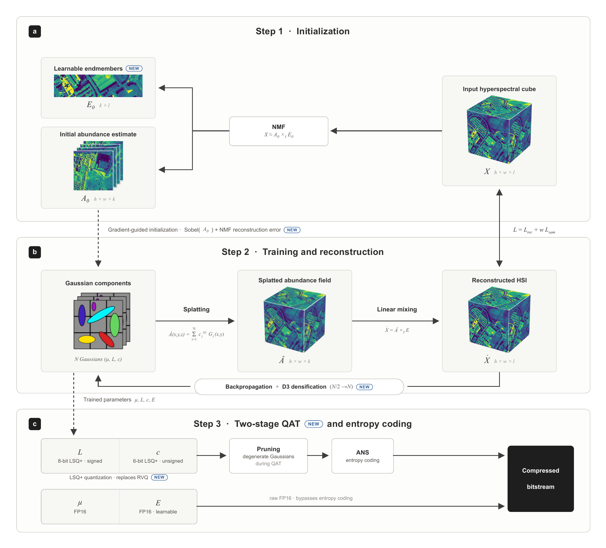
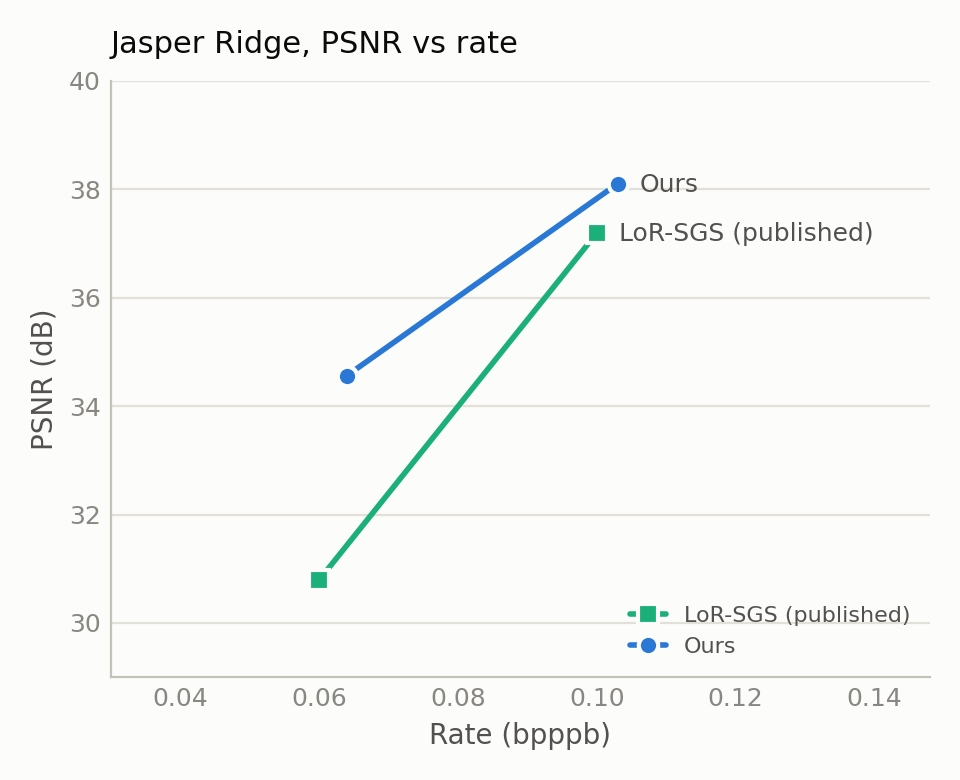
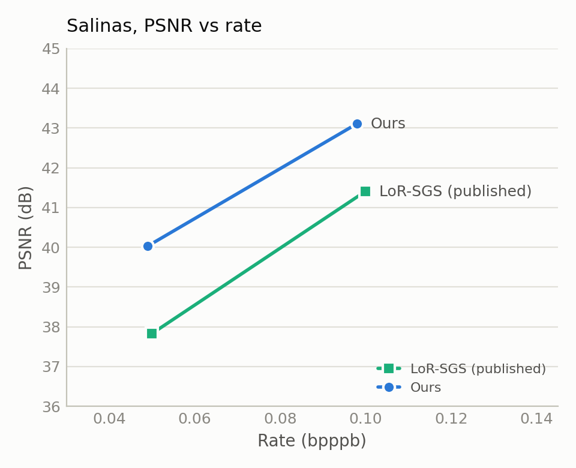
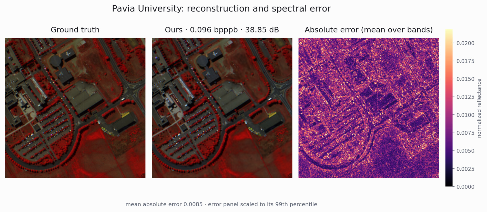

Adaptive Transfer of Low-rank Abundance Splatting

Hyperspectral images capture hundreds of narrow spectral bands per pixel, which makes them large: a single 340 x 340 x 103 cube such as Pavia University holds over 11 million values. This work compresses hyperspectral cubes with 2D Gaussian splatting. The cube is first factored by non-negative matrix factorization into a small set of endmember spectra and per-pixel abundance maps, and a set of 2D Gaussians is then fit to the low-rank abundance maps. Decoding is a single splatting pass and runs at over 600 frames per second on an RTX 3080.
Recent Gaussian splatting compression techniques were developed for RGB images. Hyperspectral abundance maps have a different structure: they are spatially smooth, low-rank, and every Gaussian parameter error propagates through all spectral bands at reconstruction. We systematically evaluate nine techniques from RGB Gaussian splatting compression on four hyperspectral benchmarks and report which transfer and which fail.
Five techniques transfer: learned step-size quantization (LSQ+) for abundances and covariances, distortion-driven densification, two-stage quantization-aware training, gradient-guided initialization, and a hyperspectral-specific addition, learnable endmembers, which adds 0.34 to 1.68 dB at no bitrate cost. Four techniques fail: content-aware filters (-0.7 to -1.7 dB), position quantization (-5 dB), progressive quantization, and spatial delta coding. The failures share a root cause: methods designed for high-frequency, channel-independent RGB data degrade quality in smooth, spectrally coupled abundance space.
The method beats the published LoR-SGS results on 6 of 8 targets (4 datasets at 2 bitrates each), with an average gain of +1.20 dB PSNR at matched bitrates. Results are averaged over 5 runs.
| Dataset | bpppb | Published PSNR | Ours | Delta |
|---|---|---|---|---|
| Jasper Ridge | 0.103 | 37.19 | 38.10 | +0.91 |
| Jasper Ridge | 0.064 | 30.79 | 34.56 | +3.77 |
| Pavia University | 0.096 | 38.95 | 38.86 | -0.09 |
| Pavia University | 0.058 | 35.76 | 36.48 | +0.72 |
| Salinas | 0.098 | 41.41 | 43.11 | +1.70 |
| Salinas | 0.049 | 37.83 | 40.03 | +2.20 |
| Urban | 0.096 | 38.22 | 38.61 | +0.39 |
| Urban | 0.047 | 34.24 | 34.20 | -0.04 |

Rate-distortion, Jasper Ridge

Rate-distortion, Salinas

Pavia University at 0.096 bpppb, 38.85 dB: ground truth, our reconstruction, and the per-pixel absolute error averaged over all bands. Error concentrates at building edges, roads, and material boundaries, while smooth regions are near-lossless, consistent with the low-rank abundance structure the method relies on.
The four benchmarks above are small crops (0.01 to 0.12 megapixels). The identical pipeline applies unchanged to three larger scenes, up to the 5.2 megapixel Chikusei cube (2372 x 2196 x 128, 45 times the pixels of the largest benchmark crop). Quality holds, and the Gaussian budget grows sublinearly with pixel count: Chikusei has 45 times the pixels of Pavia University but only 11 times the Gaussians, a density of 30 per kilopixel against 125. It compresses to 0.034 bpppb at 40.1 dB, comparable to the small benchmarks, and trains on a single 40 GB GPU with no tiling in 34 minutes.
| Scene | H x W x C | Gaussians | N/kpx | PSNR | bpppb |
|---|---|---|---|---|---|
| Pavia University (ref.) | 340 x 340 x 103 | 14,469 | 125 | 41.01 | 0.151 |
| Pavia Centre | 1096 x 715 x 102 | 71,506 | 91 | 38.99 | 0.110 |
| WHU-Hi-HongHu | 940 x 475 x 270 | 55,934 | 125 | 35.32 | 0.058 |
| Chikusei | 2372 x 2196 x 128 | 157,579 | 30 | 40.09 | 0.034 |
Single run per scene at one operating point, using the final benchmark configuration (NMF rank 16 for Chikusei, rank 12 otherwise). No published results exist at these rates, so Pavia University is repeated as a reference point.
Content-aware filters allow late-added Gaussians to become narrower than the fixed low-pass bound, and they overfit the smooth abundance maps. Position quantization at 12 bits costs over 5 dB because position noise propagates through every reconstructed band, unlike RGB where it affects 3 channels independently. Progressive quantization destabilizes the learned LSQ+ scale and offset parameters. Spatial delta coding splits the entropy coder into one stream per abundance channel, and the per-stream overhead exceeds the entropy saved.
For technical details please look at the following publication(s)
{kind=link}